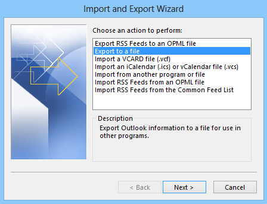
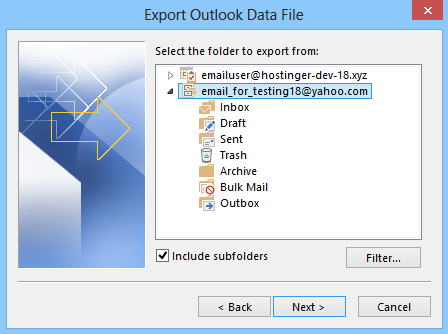
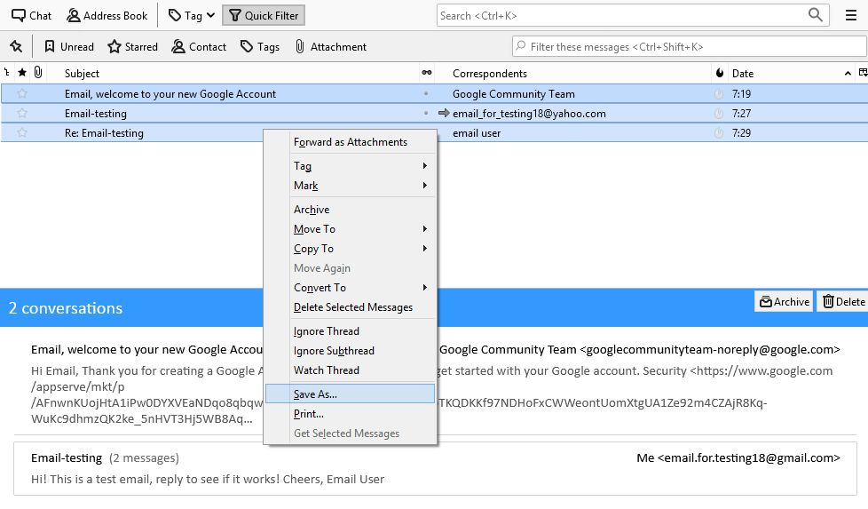

How to Back Up Emails Using Email Clients
Once you have your email server details, you need to configure your account with the email client to back up your messages. Below you can find the steps to do it using three different email applications.
Backing up Email on Outlook
Begin by adding your email account to Outlook, which you can do by following this tutorial. In the steps below, we will learn how to back up Outlook emails using the 2019 version.
- Click File, choose Open & Export and click on the Import/Export button.
- On a new window choose Export to a file option and hit the Next button.

- Then, choose the Outlook Data File (.pst) as the export format. Click Next again.
- Now select your email account from the list and again, click the Next button.

- Finally, choose the destination folder and hit the Finish button. Outlook will prompt you to create an additional password for the backup, but you can skip it by clicking Cancel if you prefer.
As you can see, using Outlook to back up your emails takes only a few clicks.
Backing up Email on Thunderbird
Launch Thunderbird and configure your email by referring to this tutorial. After you’ve finished setting up your account, check your inbox to see whether there is a missing message. If there is, you can synchronize it manually by clicking the Get Messages button.
Now, to back up using Thunderbird can be tricky since this email client does not have an in-built email export feature. However, there is a workaround:
- Create a new folder on your computer (you can name it whatever you want).
- Access the email folder you want to back up in Thunderbird.
- Use CTRL + A (CMD + A for macOS) and select all messages within the folder.
- Right-click on the email messages and choose the Save As option. Locate the folder you’ve made earlier as the save destination.

That’s it! Thunderbird will export all the selected email messages in .eml format
Backing Up Emails on Mac Mail
macOS users can back up emails using Apple Mail client. Skip to the fourth step if you already have your account set up:
- Go to Mail -> Add Account.
- Choose the Other Mail Account option. Click Continue.
- Enter your email server details and press Sign In.
- Right-click the email folder you want to backup and choose Export Mailbox.
- Select your destination folder and press the Choose button. Mail will export your emails in the form of .mbox archive.
That’s it, you have successfully backed up your email using Apple Mail. Since the .mbox format is broadly supported by all major email clients, you shouldn’t have any trouble migrating to a different one.